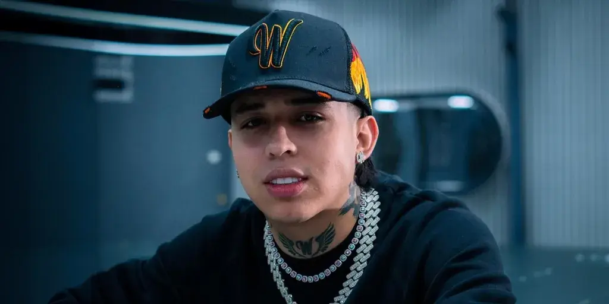

Santiago Alarcón, reconocido mundialmente como WestCOL, se ha convertido en una de las figuras más prominentes del mundo digital en Colombia y América Latina. Conocido por su estilo auténtico y su capacidad para conectar con la audiencia, ha logrado construir una sólida base de seguidores en diversas plataformas sociales.
WestCOL nació en Colombia, y desde joven mostró un interés por el entretenimiento y la creación de contenido. Comenzó su carrera en redes sociales con videos humorísticos en plataformas como TikTok, donde rápidamente ganó popularidad gracias a su carisma y creatividad. Su habilidad para contar historias y su sentido del humor lo han diferenciado de otros creadores de contenido.
El contenido de WestCOL abarca desde sketches cómicos hasta vlogs de su vida cotidiana, pasando por colaboraciones con otros influencers y celebridades. Su estilo es fresco y dinámico, lo que lo hace atractivo para un público joven que busca entretenimiento genuino. Además, ha abordado temas sociales y culturales, convirtiéndose en una voz relevante para su generación.
WestCOL no solo ha sido reconocido por su creatividad, sino también por su capacidad para influir en tendencias. Su impacto se extiende más allá de las redes sociales, participando en campañas publicitarias y eventos importantes. A medida que su influencia crece, también lo hace su responsabilidad, y ha demostrado estar consciente de su papel al utilizar su plataforma para fomentar mensajes positivos y empoderadores.
Con una carrera en constante evolución, WestCOL está explorando nuevas oportunidades, incluyendo la posibilidad de lanzar su propia línea de productos y expandir su presencia en medios tradicionales. Sus seguidores esperan con ansias lo que vendrá, ya que su autenticidad y dedicación son elementos clave de su éxito.
WestCOL es un ejemplo de cómo las redes sociales pueden catapultar a individuos talentosos a la fama. Su capacidad para conectar con su audiencia, sumada a su ingenio y creatividad, lo han posicionado como un referente en el ámbito del entretenimiento digital en Colombia. Con un futuro brillante por delante, seguro seguirá sorprendiendo a sus seguidores y dejando huella en la industria.